Branding The ATI Team
ROLE
Branding, Visual Designer
TEAM
Solo Project
Brief
Create the Advanced Technology Interactives (ATI) R&D Group's brand to improve stakeholder project communication for providing team updates, procuring funding and resources.
LOCATION
Orlando, FL
TIMELINE
Oct 2016 - Dec 2016 (3 Months) + Ongoing Updates till 2020

Some displays with the early ATI Branding elements in the office.
Challenge
The ATI Group was unable to communicate the variety of R&D initiatives being pursued by it's individual teams in a cohesive manner.
Solution
Create a team style guide to define and strengthen communication across all team deliverables with consistency.
Impact
Success of the brand increased ATI Group exposure within the company leading to increased funding for projects. The Group grew from 15 to 50+ members in 4 years.
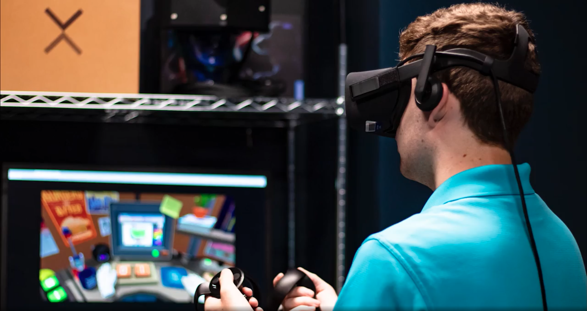
ATI Group investigated the concept of virtual reality (VR) in theme parks first by playing games in VR!
context
A Start-Up Mindset within a Larger Company
The Advanced Technology & Interactives (ATI) Group was a multi-faceted research and development (R&D) group within Universal Creative (UC) formed in late 2015. The ATI Group's purpose is to research upcoming technologies or develop upon existing ones in novel ways that could be implemented in the theme park to create new experiences. The Group's Team Members were often dispatched to lead technology initiatives in different projects and were physically in different office locations.
goals
1. Communicate Team Purpose and Deliverables in a Consistent Manner
1. Communicate Team Purpose and Deliverables in a Consistent Manner
The ATI Group was barely a year old at the start of this branding project so in order to thrive within the company, we needed all of our Team Members, existing and newly onboarded, to understand our purpose and be able to communicate it to others consistently as well.
2. Build Up Team Presence
Universal Creative is still heavily construction-based, so as a Group which operated differently, we needed to establish a presence to convince adoption of our work into capital projects.

process
Forming The Brand Building Blocks
Forming The Brand Building Blocks
I worked closely with ATI Creative Director Tom Geraghty to grasp his vision for the group as well as surveyed the other Team Members for their thoughts.
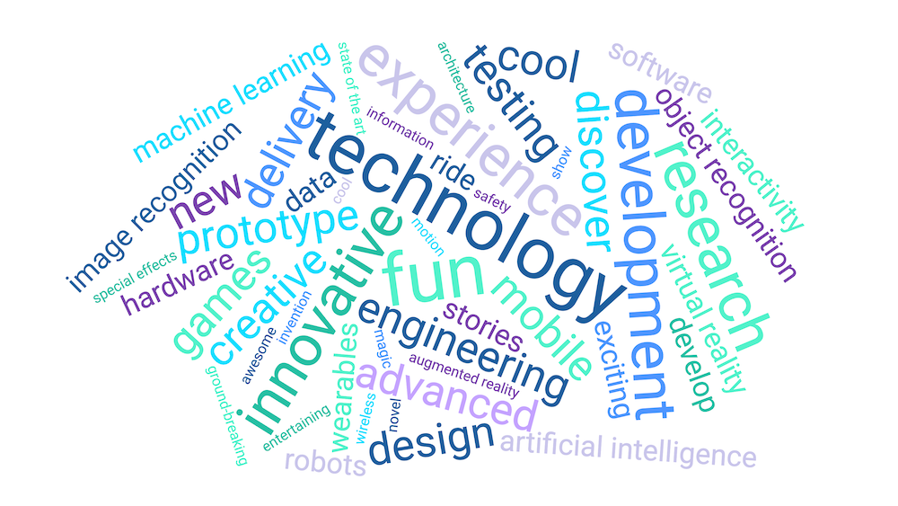The team operated with 3 main phases, each that I associated with a corresponding team color, the palette inspired from a combination of the official NBCUniversal style guide and our team preference.
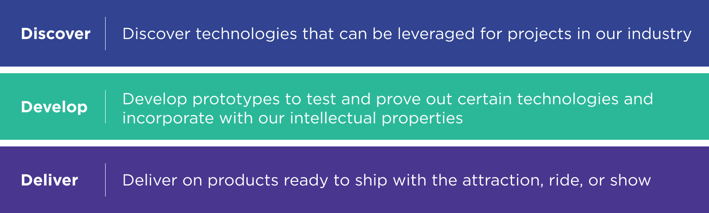
I identified assets that our Team Members used to prioritize which resources to design for.
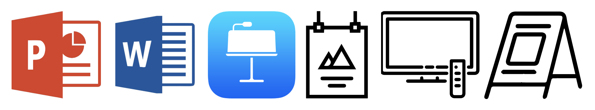Visual Design
I started by combining the ATI Group Name with the Universal Creative logo. Unfortunately there were many constraints and ultimately settled on the following:
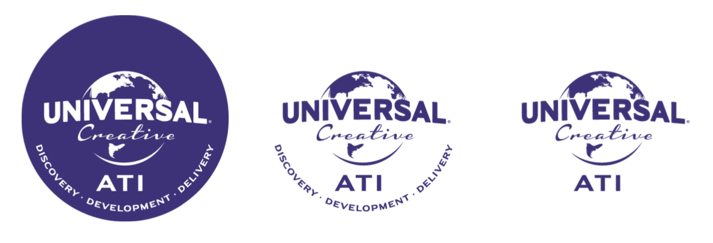Following up, I created assets for a Microsoft PowerPoint Master Template as it was the most frequently used program for formal presentations to our stakeholders. The process included taking inspiration from tech-related patterns and abstracting letters.
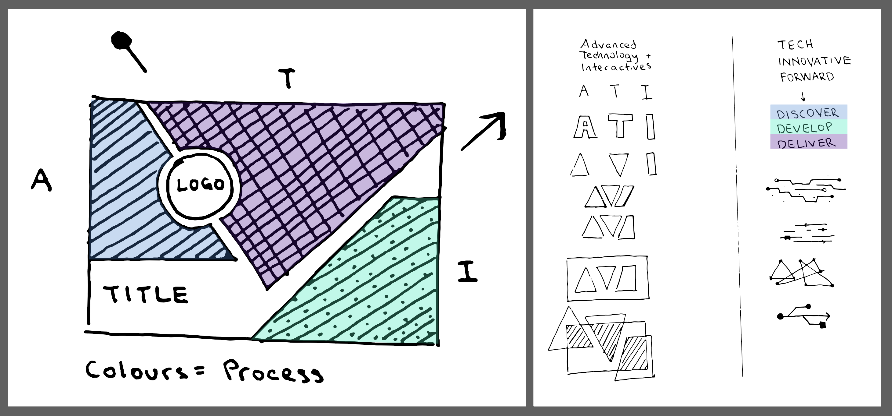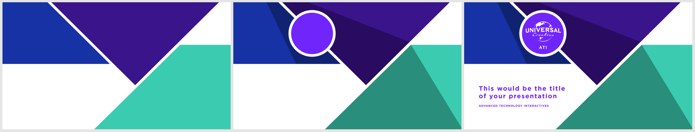
The Templates and Assets
I producing the following additional team-branded templates, a branding guideline booklet, and other material for others to reference.
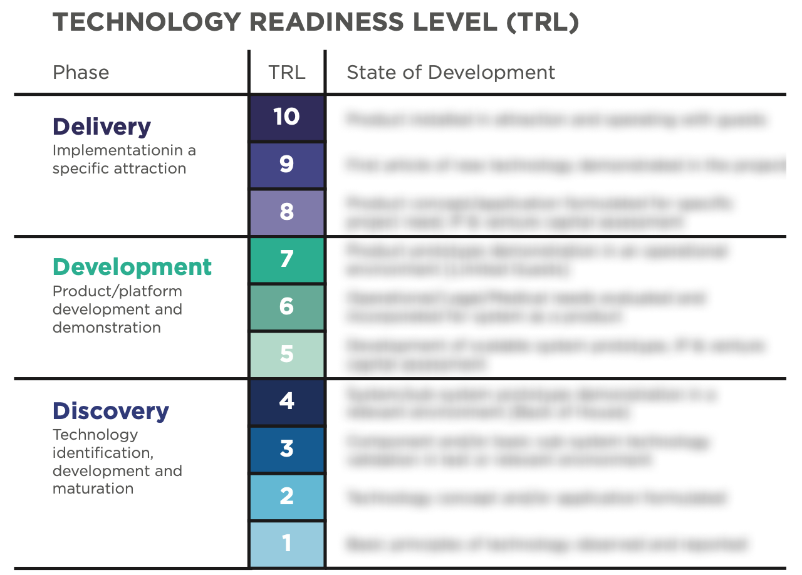
ATI used a theme-park catered Technology Readiness Level table to communicate prototype development.
After creating the ecosystem of essential templates, I also custom designed assets for formal demonstrations of our team's work. These assets included description signage, email invites, presentations, notices, and more. Some demonstrations will be seen by upwards of 100 Team Members.
Custom Presentation Work
I created custom presentations for ATI leadership to present to Universal Creative stakeholders. These ranged from project updates, financial planning, proposals and more. I would make custom infographics in order to best portray the information being communicated.
I also held the responsibility to choose whether to adopt the ATI brand or cater presentations to specific intellectual properties the team was working with. This choice was typically determined by which client the work was being presented to. Some properties have included:
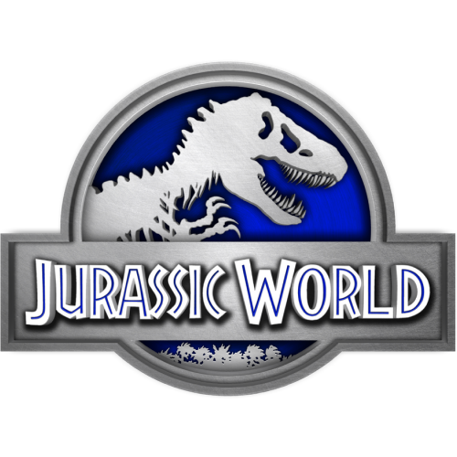 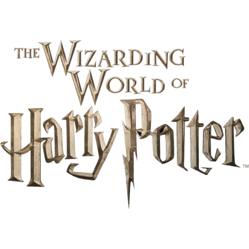 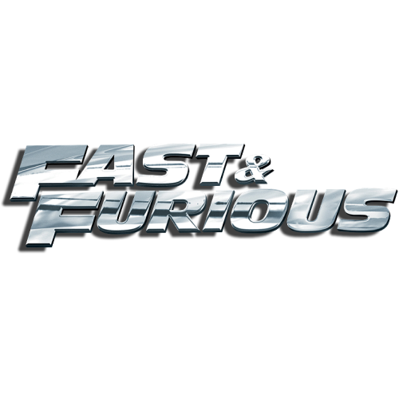 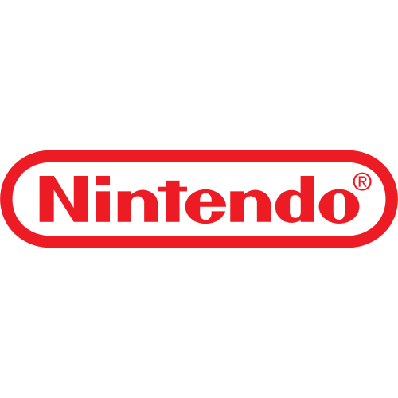impact
Design Done Well Will Be Used
Design Done Well Will Be Used
My work on the ATI brand was so well received and accessible that other teammates who weren't necessarily designers were able to easily use my assets to create their own products when needed. Some of these products included stickers, thank you cards, and custom story cards made for a 2017 SXSW experience with Sony.

ATI branded items made by other Team Members such as stickers and thank you cards.
Exposure Turned To Growth
The ATI Brand became an important tool within the Group. As each Team Member was educated on how to use the Brand, they reinforced our team and its purpose with each of their own individual products. Successful works gained more exposure for ATI as a whole which procured investment for more projects, growing the team from 15 to 50+ members from 2016 to 2020.
Impact on Branding within Universal Creative
My work, along with a other branding pioneers, became part of a larger initiative for reimagining Universal Creative's overall brand. A year after I entered the company, I witnessed Universal Creative form it's own Branding and Communications's team and was lucky enough to participate in an early consultation panel when the group was developing how to communicate Universal Creative to the world.
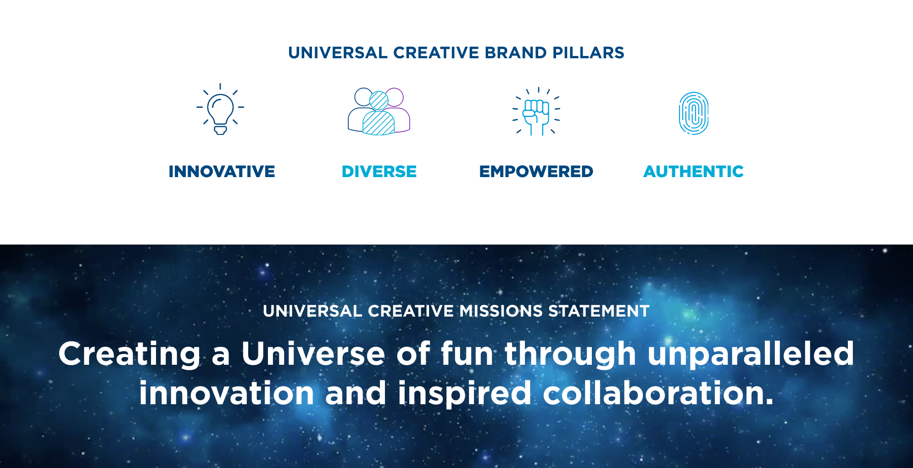Universal Creative's Brand also drew inspiration from NBCUniversal's style guide.
follow up
Aligning ATI to Universal Creative
Aligning ATI to Universal Creative
By the time Universal Creative's brand was established, the majority of ATI was already grandfathered into using my original templates. However, as a team within Universal Creative, the discrepancy between the two brands had the ability to create confusion in the future. I engaged with the Brand and Communication's team to collaborate on updating ATI's existing templates to adopt the Universal Creative style guide.
Since the UC brand was still young, it did not yet have every asset that ATI was already using. I managed to recreate most of our existing documentation to follow the UC brand while gaining approval on particular aspects that could still help ATI differentiate themselves from other groups within the company.